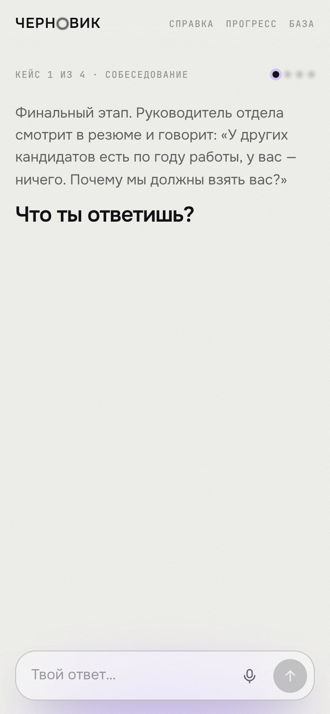
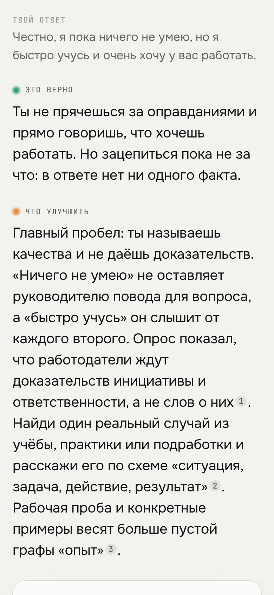
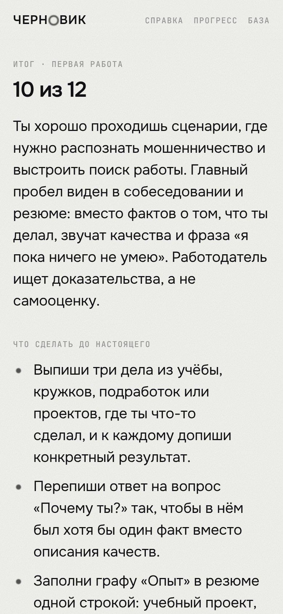
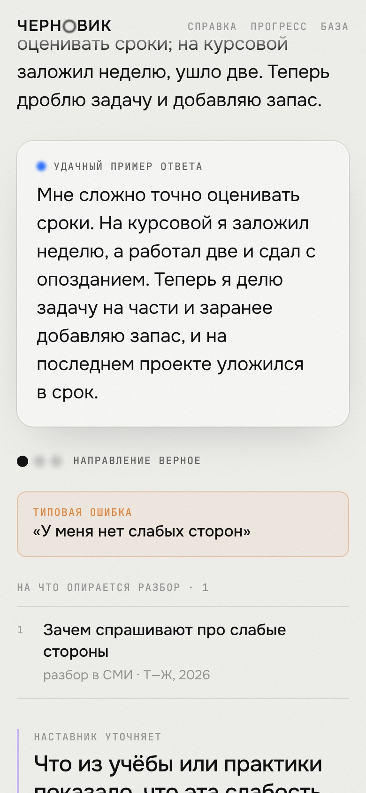
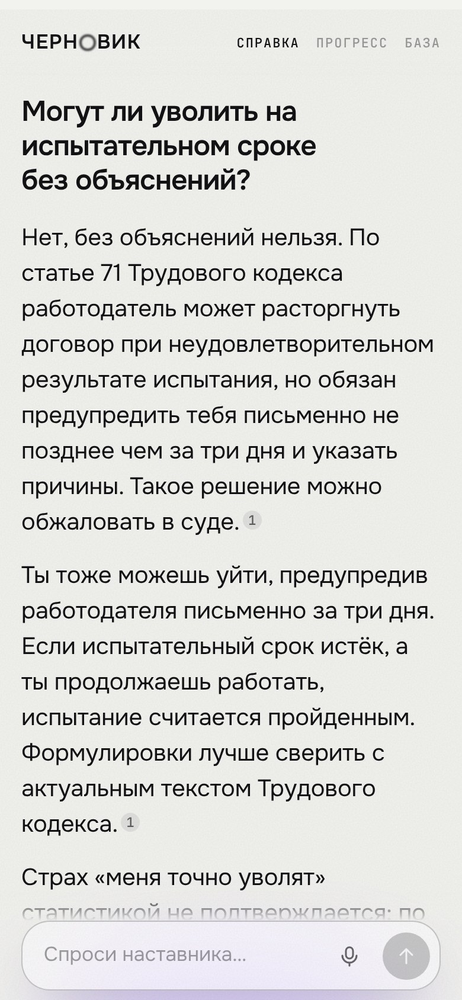
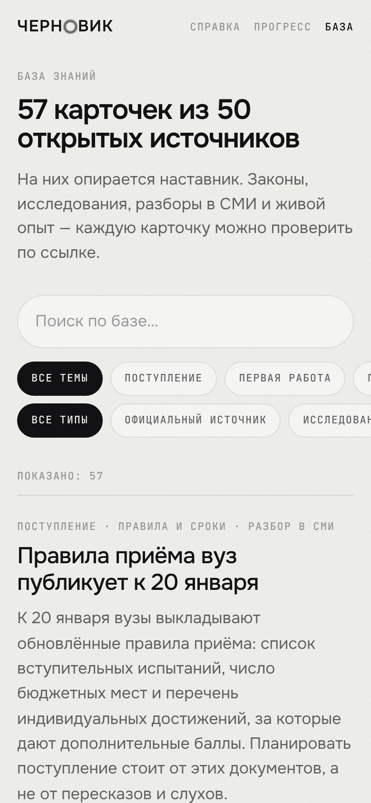
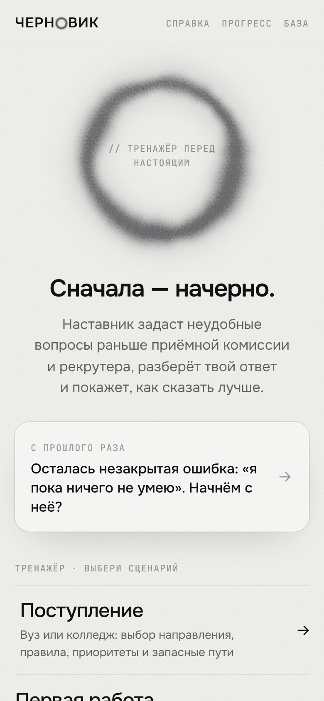
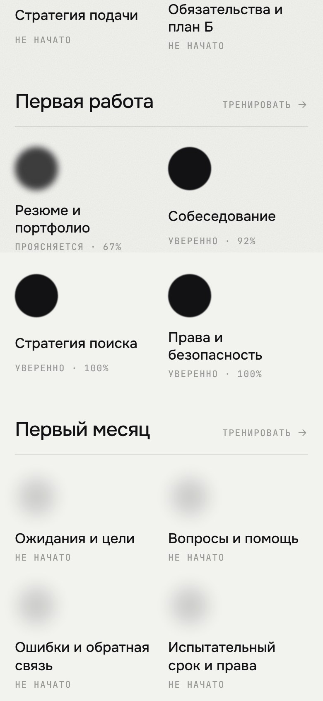
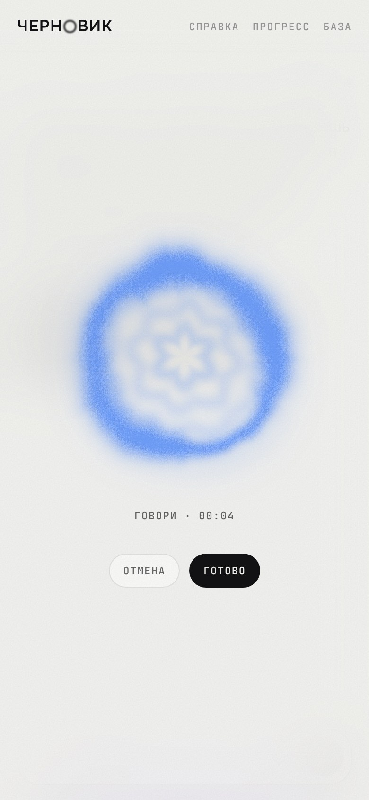
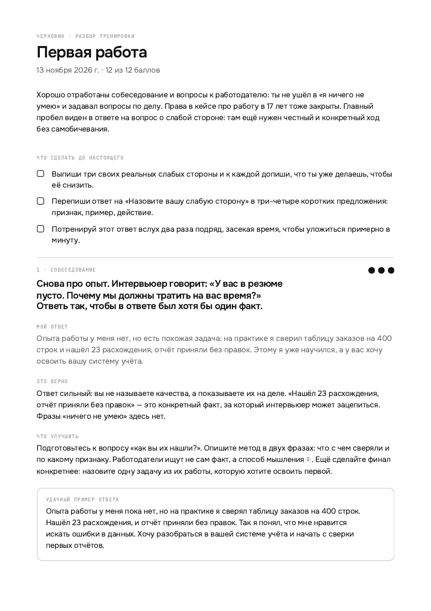

90% → ⅓
Почти 90% выпускников уверены, что умеют работать в команде и брать ответственность. Согласна с ними треть работодателей.
hh.ru, Career.ru
Кейс «Цифровое наставничество и AI-менторство» · Софтлайн Решения · категория Lead
AI-тренажёр для абитуриента и стажёра.
Сначала — начерно.
github.com/arniByte/ed_adviser
01 · проблема
90% → ⅓
Почти 90% выпускников уверены, что умеют работать в команде и брать ответственность. Согласна с ними треть работодателей.
hh.ru, Career.ru
1 из 3
Столько специалистов работает по полученной профессии. Выбор направления делают один раз и почти вслепую.
hh.ru, 2025
молчание
Новички, которые чаще спрашивают, быстрее осваиваются. Но вопрос кажется признанием слабости — и его не задают.
Morrison, Journal of Applied Psychology, 1993
Сайты вузов и вакансии отвечают на вопрос «что нужно». Никто не спрашивает в ответ: «А как ты сам это скажешь?»
02 · решение
01
Ситуация из приёмной кампании, собеседования или первой рабочей недели. Отвечаешь текстом или голосом.
02
Что верно, что улучшить, удачный пример ответа. Каждый факт ведёт к открытому источнику.
03
В следующий раз начинает с прошлой ошибки и чаще даёт кейсы из слабых зон.
Три сценария: поступление, первая работа, первый месяц в компании.
03 · тренажёр-экзаменатор



04 · обратная связь эксперта
типовая ошибка
«Слабых сторон у меня нет. Ну, разве что перфекционизм».
как сказать иначе
«Мне сложно оценивать сроки: на курсовой заложил неделю, а ушло две. Теперь делю задачу на части и добавляю запас».
В каталоге 20 типовых ошибок. У каждой — причина, переформулировка и карточка с источником.

05 · информационный режим


06 · база знаний
57 карточек
50 источников
21 кейс
20 типовых ошибок
официальные · 8
Статьи Трудового кодекса, мониторинг качества приёма ВШЭ, карьерный центр MIT
исследования · 17
Schmidt и Hunter об отборе, Granovetter о слабых связях, Edmondson о безопасности в команде
разборы в СМИ · 23
Т—Ж, hh.ru, «Российская газета», «Мел», Skillbox Media
живой опыт · 9
Истории читателей о поступлении и обмане при поиске работы, посты HR и студентов на Хабре
Скрипт проверяет связи между карточками, кейсами и ошибками и открывает каждую ссылку.
07 · адаптивность и аналитика
Карта прогресса: размытая точка — зона, где ответы пока плавают. Чем увереннее ответы, тем она резче.


08 · голос и экспорт


09 · архитектура и стек
браузер
Интерфейс на React и TypeScript
Память в localStorage
Запись голоса в WAV
→
функции vercel
/api/chat — поиск, промпт, поток
/api/transcribe — речь в текст
Защита ключа и лимит запросов
→
openrouter
claude-haiku-5.5 — наставник
gpt-5.6-luna — запасная
gemini-3.1-flash-lite — речь
≈ 1 цент стоит одна тренировка
3–7 секунд на разбор ответа
33 теста и проверка в CI
0 UI-библиотек и баз данных
10 · данные и этика
У каждой карточки есть ссылка, издание и год. Закрытых и платных данных в базе нет.
Цифры и нормы берутся только из карточек. Пробел в базе наставник называет прямо.
Аккаунтов нет. Прогресс хранится в браузере и стирается одной кнопкой.
Советы носят информационный характер и не заменяют официальные требования вузов и работодателей.
что дальше
Код, база знаний и документация:
github.com/arniByte/ed_adviser